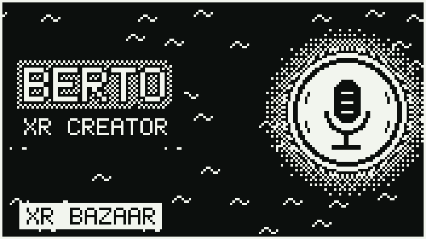
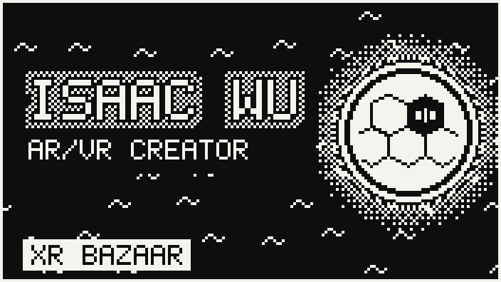
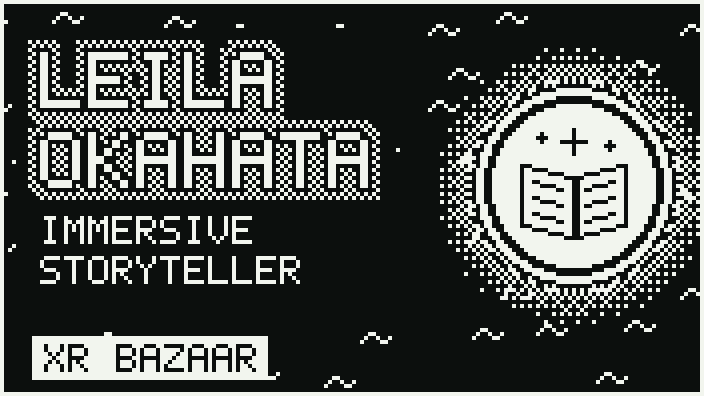

Berto
Roberto “Berto” Jolliffe III is a voice-over actor, author and creative technologist, and a Snapchat AR Scholar building immersive experiences with Lens Studio and Spectacles.
CH 04
I teach students, many of them new to the technology, to create immersive experiences that address real-world challenges.
School of Journalism and Communication, University of Oregon.
Interested in any of these? Reach out to me by email.
Portfolios from alumni of the lab.

Roberto “Berto” Jolliffe III is a voice-over actor, author and creative technologist, and a Snapchat AR Scholar building immersive experiences with Lens Studio and Spectacles.

An AR and VR creator based in Portland. His thesis project, Beeyond, is a wearable AR experience for bee conservation.

A science writer and communicator who creates nonfiction and science narratives for augmented and mixed reality, and a product and project manager with the Snap AR Scholars.